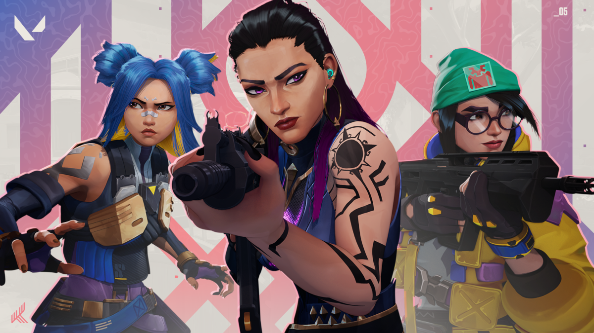
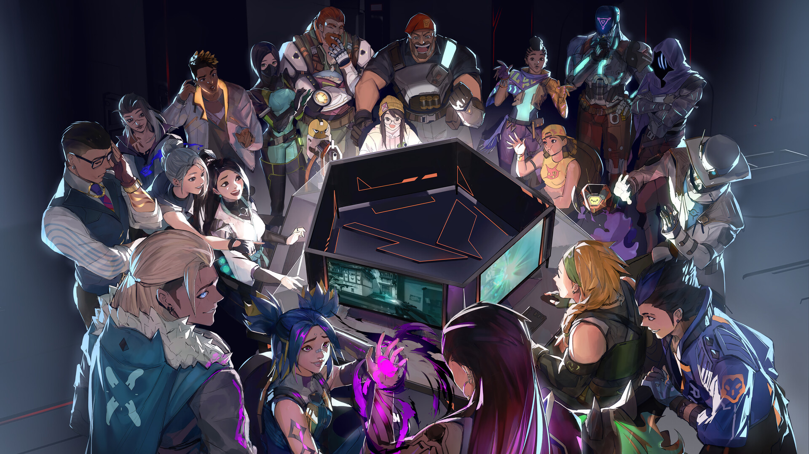

Valorant is a free-to-play, 5v5, First-Person tactical hero shooter developed and published by Riot Games, who officially released it on June 2, 2020. Valorant was released at the beginning of the COVID-19 pandemic, however the game's beta test ran from around April 7, 2020 up until the official release date. Valorant was an instantaneous hit in the gaming community, being a breath of fresh air to the first-person shooter scene, combining the strategic, team-based aspect of Counter Strike, and combining it with the unique agent abilities present in a game like Overwatch. The inspiration was directly taken from the most dominant FPS games at the time, Counter-Strike:Global Offensive and Overwatch.
How do I even install it?
You can find the download page here. Take the following steps once you've launched the download page for Valorant.
- Hit "Download."
- Launch the "VALORANT Installer."
- Hit "Install."
- Once it's installed, start the launcher, and log into an account.
- Once you've logged into an account, hit "Play" and complete the tutorial!
Accolades and Recognition
Valorant has garnered numerous accolades since its official release on June 2, 2020. It first recieved the Best ESports Game Award at The Game Awards 2020 and has been praised repeatedly for its precise shooting mechanics, reminiscent of CS:GO, and unique blend of special abilities, and as well as its robust esports ecosystem. Its also been praised numerous times for its competitive integrity and the immense amount of anti-cheat measures that go into the game that have been highlighted as industry-leading. Valorant's success is also reflected in its massive, global player base and the thriving professional scene that is still extremely popular across the world to this day, with plenty of local, regional, and global tournaments and events that gave Valorant its humongous following.
 The Agents
Valorant has introduced a lot of loveable characters with their own unique personalities. They're referred to as "agents" and as of May 16, 2024, Valorant has added 24 total agents. Each agent has their own special abilities, some having the ability to create smokes that block off important lines of sight for their team to have the upper hand on the enemy, and some have an extensive kit of robots and gadgets at their disposal, an example being Raze who is a Brazilian explosive enthusiast who relies on her grenades and robot explosive to get damage, and her ultimate is a giant rocket launcher. There's even a robot character, named KAY/O!